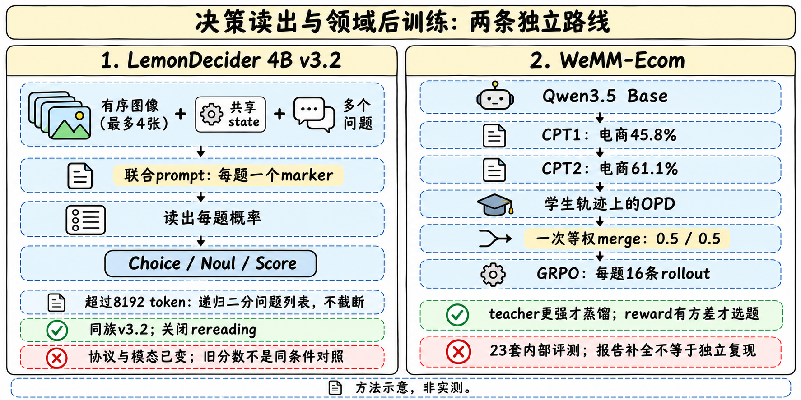
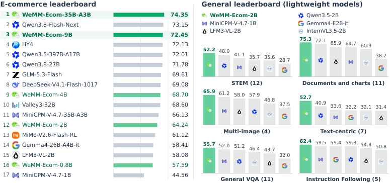

WeMM-Ecom技术报告补全 — 领域数据、on-policy蒸馏与可验证RL

数据构建和CPT
五个尺寸初始化对应Qwen3.5 Base，全参数WeChat-YATT优化。五电商域、七通用域按主要监督目标互斥计数；同一条多图不重复计样本。电商包括属性/规格/商品定位、信息审计、SPU/SKU检索、领域QA、内容生成；通用包含图文视频、OCR文档图表、grounding、指令/推理、STEM、世界知识与纯文本。所有阶段保留通用数据。
| 阶段 | token预算 | 电商占比 | 序列长度 | 优化 |
|---|---|---|---|---|
| CPT1 | 370.3B（图精确370.32B） | 45.8% | 16384 | AdamW+Muon |
| CPT2 | 76.7B（图精确76.66B） | 61.1% | 32768 | AdamW+Muon |
| OPD | 0.6B | 混合模式 | 32768 | AdamW，lr1e-6 |
| GRPO | 0.2B | 混合模式 | 65536 | AdamW，lr1e-6 |
领域池内审计6.4→18.0%、QA24.7→31.4%、感知37.5→23.6%；这些是池内比例，不能误当全部token比例。通用池OCR文档图表13.7→23.8%、STEM2.9→19.0%。按域验证loss调整混合。CPT损失用每样本 \(N_i^{-1/2}\) 加权token和、分母 \(\sum_i\sqrt{N_i}\)，在纯token平均与等样本平均之间平衡长回答。
质量管线包含WeMMEmbedding聚类抽样recaption与去重、PaddleOCR线索、Qwen122B生成STEM推理并用35B检查答案、丢弃截断/坏格式；商品文章先双分类器筛查，再122B过滤广告并抽事实、MinHash去重。每来源按token预算比例降采样，而非大来源挤掉小来源。不存在目标必须明确拒绝，不得幻觉出框。
OPD、merge与GRPO
499998条OPD提示：teacher/student每题各采8次，仅留teacher均分严格更高的题。0.8/2B由WeMMEcom9B教，4B由35BA3B教，9B和35BA3B由Qwen3.5-122BA10B教。学生生成token的信号为 \(a^{KD}_{i,t}=\log\pi_T(y_{i,t}|h)-\log\pi_{old}(y_{i,t}|h)\)，固定prefix下其负期望对应reverseKL；更新用importance ratio和[0.8,1.2]clip，不是简单用teacher最终答案做离线SFT。每题实际OPD采2条，T1/top_p1，max生成24576、总窗32768，无额外reference penalty、蒸馏权重1。
merge只对vision/language参数与对应Qwen3.5后训练checkpoint等权插值；RL actor/reference都从此点初始化。30976条RL提示从merge模型8次thinking候选中筛选：reward方差>0、均分≤0.95，数学逻辑还要均分>0。正式每题G16、T1/top_p0.9，weight_decay0.01，全部同组同模式。思考/非思考约4:1，用promptID确定性hash；OPD400229条thinking（80.05%），RL24823（80.14%）。
组内标准差用Bessel修正、ε1e-4；全同reward组advantage0。task-specific verifier对检测IoU/类别、最终答案、指令约束等给奖；指令完全满足1，部分满足0.49×平均满足率。格式错或生成碰cap未完成→task reward0；thinking必须正确reasoning块+非空答案。verifier组故障时遮掉task reward，仅referenceKL，不能把评测故障当普通零分负例。
评测规模与结果的限制
| 场景 | 样本 | 核心 |
|---|---|---|
| Product OCR | 19962 | 包装文字与规格 |
| Grounding六项 | 11939 | 商品/品牌/资质/图表/尺寸/直播 |
| Knowledge两项 | 4598 | 商品品牌知识 |
| Attributes四项 | 26676 | 属性与选项 |
| Retrieval三项 | 21584 | region/SPU/SKU匹配 |
| Moderation三项 | 6443 | 规则审核与图标题一致性 |
| Reasoning四项 | 3500 | 表格约束程序求真值 |
| 五公开集 | 112415 | ShoppingMMLU、ChineseEcomQA、RAIR、EcomMMMU、IndustryBenchMIPU |
产品ID、图像精确hash、感知hash与embedding相似度共同防跨分割重复。评测默认max生成65536，OmniDocBench greedy32768；不同任务采样/惩罚不同，Qwen3-30BA3B-Instruct2507用于语义判分。完整原表和全部行另存，不将内部题面搬入其他训练集。
35BA3B非思考领域总分74.4，对手Qwen3.8FlashNext73.2；dense模型按思考/非思考排列：9B72.5/72.1、4B68.7/68.7、2B64.2/63.3、0.8B57.6/56.7。不要把这个顺序倒写。卡片已有某检索组非思考78.3高于思考70.3；也应保留。论文与模型卡数据一致性按具体分组核验，不用跨组最大值替换。训练recipe现在可读，但业务数据、完整rawrun/误差、严密消融和独立复现仍缺。
对Agent训练的可操作判断
报告发现修复了资料缺失，不证明昨日所有结论已经被独立验证，也不能把该公开评测题面/逐题答案拿来生产训练数据。
官方来源与关联资料
📊 中文Poster：中文Poster
官方原图与机制对照
